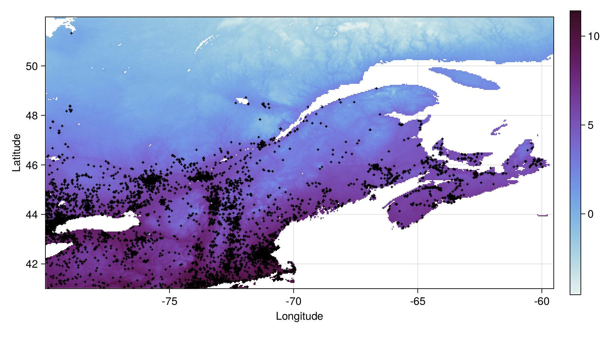
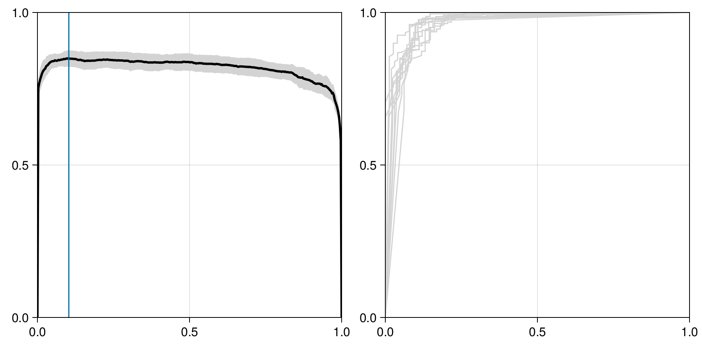
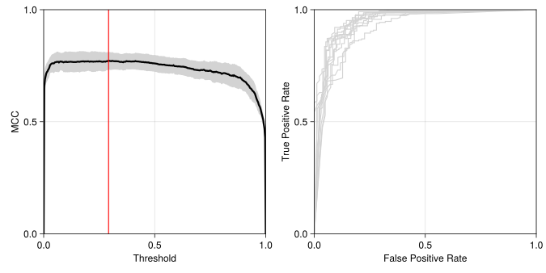
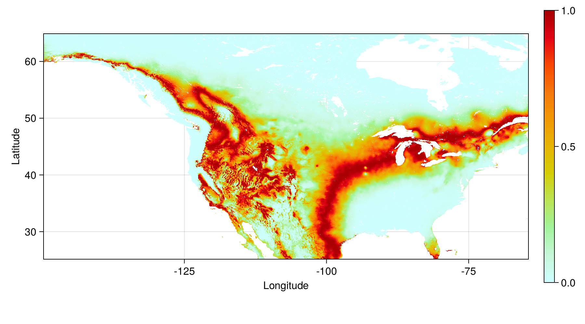
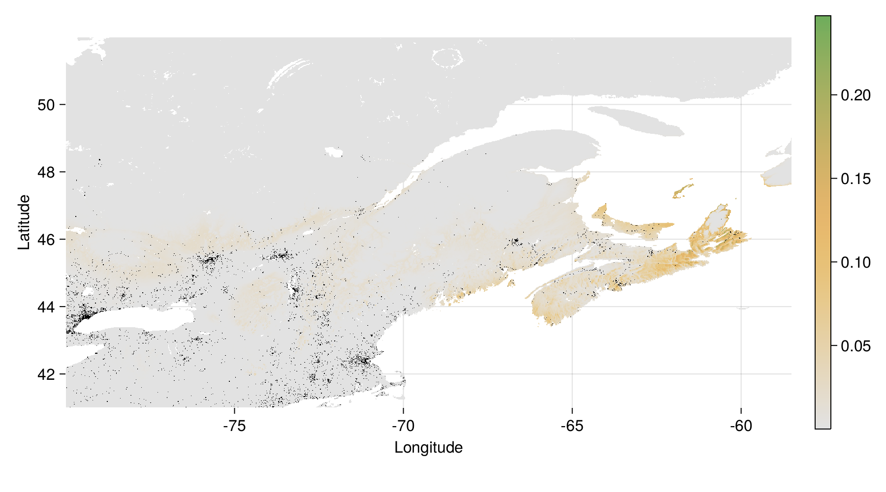
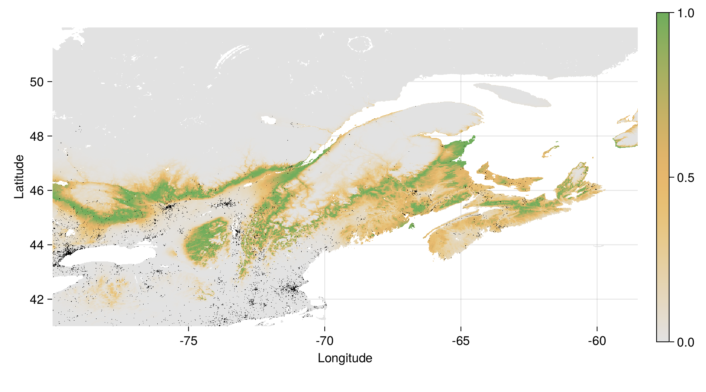
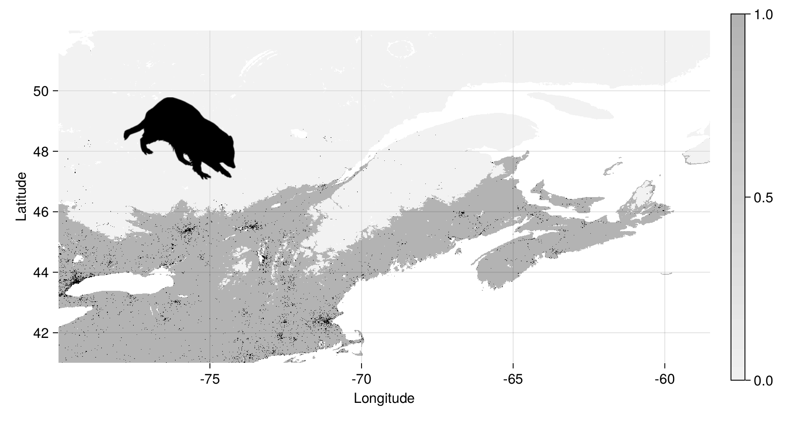
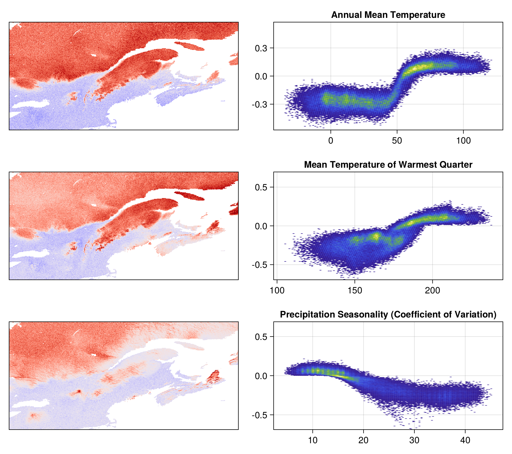

include(joinpath("code", "pkg.jl")); # Dependencies
include(joinpath("code", "nbc.jl")); # Naive Bayes Classifier
include(joinpath("code", "splitters.jl")); # Cross-validation
include(joinpath("code", "confusion.jl")); # Confusion matrix utilities
include(joinpath("code", "variableselection.jl")); # Variable selection
include(joinpath("code", "shapley.jl")); # Shapley valuesBuilding an interpretable SDM from scratch
using Julia 1.9
Overview
Build a simple classifier to predict the distribution of a species
Use this as an opportunity to talk about interpretable ML
Discuss which biases are appropriate in a predictive model
CC BY 4.0 - Timothée Poisot
We care a lot about the
process
and only a little about the
product
Raccoons!
Relatable (bag under eyes, love naps, out of shape)
High volume of data
Species of concern for zoonotic diseases
Where can we find them in/around Québec?
See also Higino et al. (2021) for more quality 🦝 content
Do try this at home!
💻 + 📔 + 🗺️ at https://github.com/tpoisot/InterpretableSDMWithJulia/
To train a model, we need…
- A response variable \(y\)
-
presence or absence of a species at a location identified by its latitude and longitude
- A series of predictors \(\mathbf{x}\)
-
bioclimatic variables
- A series of predictions \(\hat y\)
-
which we will compare to the values of \(y\)
Bioclimatic data
We collect BioClim data from CHELSA v1, using SpeciesDistributionToolkit
BioClim data from Karger et al. (2020)
Bioclimatic data
We set the pixels with only open water to nothing
Land-cover data from Tuanmu & Jetz (2014)
Species occurrence filtering
We use the GBIF API through the GBIF package to get data about Procyon lotor
We only consider occurrences within the bounding box!
See Dansereau & Poisot (2021) for more about these packages
Where are we so far?
WAIT!
It’s not serious ecology unless we use Phylopic:
📢 Always use the Phylopic.attribution function!
Image of Procyon lotor provided by Margot Michaud
Where are we so far?

Spatial thinning
We limit the occurrences to one per grid cell, assigned to the center of the grid cell
Background points generation
We generate background points in a 200km radius around each point – but we keep a 20km buffer with no background points:
And then we sample 4 background points out of every 10 occurrences:
See Barbet-Massin et al. (2012) for more on background points
Background points cleaning
We can remove all of the information that is neither a presence nor a pseudo-absence
Data overview
Preparing the responses and variables
Xpresence = hcat([bioclim_var[keys(presence_layer)] for bioclim_var in bioclim_clipped]...)
ypresence = fill(true, length(presence_layer))
Xabsence = hcat([bioclim_var[keys(absence_layer)] for bioclim_var in bioclim_clipped]...)
yabsence = fill(false, length(absence_layer))
X = vcat(Xpresence, Xabsence)
y = vcat(ypresence, yabsence)The model – Naive Bayes Classifier
Prediction:
\[ P(+|x) = \frac{P(+)}{P(x)}P(x|+) \]
Decision rule:
\[ \hat y = \text{argmax}_j \, P(\mathbf{c}_j)\prod_i P(\mathbf{x}_i|\mathbf{c}_j) \]
With \(n\) instances and \(f\) features, NBC trains and predicts in \(\mathcal{O}(n\times f)\)
The model – Naive Bayes Classifier
Assumption of Gaussian distributions:
\[ P(x|+) = \text{pdf}(x, \mathcal{N}(\mu_+, \sigma_+)) \]
Cross-validation
We keep an unseen testing set – this will be used at the very end to report expected model performance
For validation, we will run k-folds
See Valavi et al. (2018) for more on cross-validation
A note on cross-validation
- All models share the same folds
-
we can compare the validation performance across experiments to select the best model
- Model performance can be compared
-
we average the relevant summary statistics over each validation set
- Testing set is only for future evaluation
-
we can only use it once and report the expected performance of the best model
Baseline performance
We need to get a sense of how difficult the classification problem is:
This uses an un-tuned model with all variables and reports the average over all validation sets
Measures on the confusion matrix
| Initial | |
|---|---|
| FPR | 0.16 |
| FNR | 0.06 |
| TPR | 0.94 |
| TNR | 0.84 |
| MCC | 0.78 |
It’s a good idea to check the values for the training sets too…
Variable selection
We add variables one at a time, until the Matthew’s Correlation Coefficient stops increasing – we keep annual temperature, isothermality, mean diurnal range, and annual precipitation
This method identifies 8 variables, some of which are:
Annual Mean Temperature
Mean Diurnal Range (Mean of monthly (max temp - min temp))
Isothermality (BIO2/BIO7) (×100)
Discuss - can we force variable selection?
constrained variable selection
VIF + variable selection
PCA?
Model with variable selection
Measures on the confusion matrix
| Initial | Var. sel. | |
|---|---|---|
| FPR | 0.16 | 0.15 |
| FNR | 0.06 | 0.05 |
| TPR | 0.94 | 0.95 |
| TNR | 0.84 | 0.85 |
| MCC | 0.78 | 0.81 |
How do we make the model better?
The NBC is a probabilistic classifier returning \(P(+|\mathbf{x})\)
The decision rule is to assign a presence when \(P(\cdot) > 0.5\)
But \(P(\cdot) > \tau\) is a far more general approach, and we can use learning curves to identify \(\tau\)
Thresholding the model
ty, tX = y[idx], X[idx,available_variables]
thr = LinRange(0.0, 1.0, 350)
C = zeros(ConfusionMatrix, (k, length(thr)))
for (j,fold) in enumerate(folds)
trn, vld = fold
foldmodel = naivebayes(ty[trn], tX[trn,:])
foldvalid = vec(mapslices(foldmodel, tX[vld,:]; dims=2))
for (i,t) in enumerate(thr)
C[j,i] = ConfusionMatrix(foldvalid, ty[vld], t)
end
endBut how do we pick the threshold?
Tuned model with selected variables
Measures on the confusion matrix
| Initial | Var. sel. | Tuned | |
|---|---|---|---|
| FPR | 0.16 | 0.15 | 0.18 |
| FNR | 0.06 | 0.05 | 0.03 |
| TPR | 0.94 | 0.95 | 0.97 |
| TNR | 0.84 | 0.85 | 0.82 |
| MCC | 0.78 | 0.81 | 0.82 |
Tuned model performance
We can retrain over all the training data
Estimated performance
| Final model | |
|---|---|
| FPR | 0.21 |
| FNR | 0.03 |
| TPR | 0.97 |
| TNR | 0.79 |
| MCC | 0.8 |
Acceptable bias
false positives: we expect that our knowledge of the distribution is incomplete!
false negatives: we used a heuristic for background points!
Prediction for each pixel
Tuned model - prediction
Tuned model - uncertainty
IQR for the models trained on each fold
Tuned model - entropy
Entropy (in bits) of the NBC probability
Tuned model - range
Probability > 0.209
Predicting the predictions?
Shapley values (Monte-Carlo approximation): if we mix the variables across two observations, how important is the \(i\)-th variable?
Expresses “importance” as an additive factor on top of the average prediction (here: average prob. of occurrence)
shapval = [similar(first(predictors)) for i in eachindex(available_variables)]
Threads.@threads for k in keys(shapval[1])
x = [p[k] for p in predictors[available_variables]]
for i in axes(shapval, 1)
shapval[i][k] = shapleyvalues(finalmodel, tX, x, i; M=50)
if isnan(shapval[i][k])
shapval[i][k] = 0.0
end
end
endImportance of variables
varimp = sum.(map(abs, shapval))
varimp ./= sum(varimp)
for v in sortperm(varimp, rev=true)
vname = variables[available_variables[v]][2]
vctr = round(Int, varimp[v]*100)
println("$(vname) - $(vctr)%")
endAnnual Mean Temperature - 43%
Mean Temperature of Warmest Quarter - 41%
Mean Diurnal Range (Mean of monthly (max temp - min temp)) - 4%
Isothermality (BIO2/BIO7) (×100) - 4%
Precipitation of Driest Month - 3%
Mean Temperature of Wettest Quarter - 3%
Precipitation of Coldest Quarter - 2%
Annual Precipitation - 0%There is a difference between contributing to model performance and contributing to model explainability
Top three variables
Most determinant predictor

Take-home
building a model is incremental
each step adds arbitrary decisions we can control for, justify, or live with
we can provide explanations for every single prediction
free online textbook (in development) at
https://tpoisot.github.io/DataSciForBiodivSci/
References

Barbet-Massin, M., Jiguet, F., Albert, C.H. & Thuiller, W. (2012). Selecting pseudo-absences for species distribution models: how, where and how many? Methods in Ecology and Evolution, 3, 327–338.
Dansereau, G. & Poisot, T. (2021). SimpleSDMLayers.jl and GBIF.jl: A framework for species distribution modeling in julia. Journal of Open Source Software, 6, 2872.
Higino, G.T., Forero, N., Banville, F., Dansereau, G. & Poisot, T. (2021). Computers can help us find raccoons and other living creatures. Frontiers for Young Minds, 9.
Karger, D.N., Schmatz, D.R., Dettling, G. & Zimmermann, N.E. (2020). High-resolution monthly precipitation and temperature time series from 2006 to 2100. Scientific Data, 7.
Tuanmu, M.-N. & Jetz, W. (2014). A global 1-km consensus land-cover product for biodiversity and ecosystem modelling. Global Ecology and Biogeography, 23, 1031–1045.
Valavi, R., Elith, J., Lahoz-Monfort, J.J. & Guillera-Arroita, G. (2018). blockCV: An r package for generating spatially or environmentally separated folds for k-fold cross-validation of species distribution models. Methods in Ecology and Evolution, 10, 225–232.